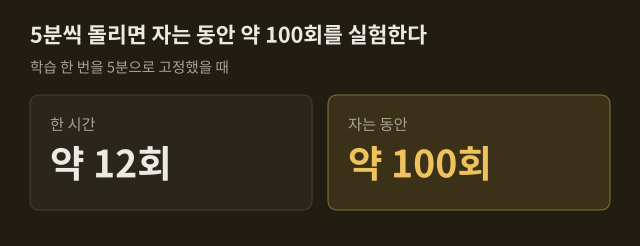
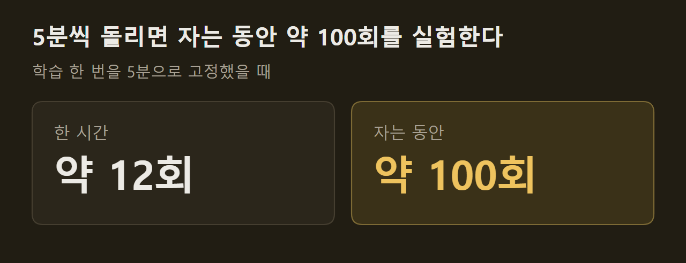

삼성 인터넷에서 그래프가 어떻게 보이는지 견주는 시험 화면입니다. 글자가 또렷하게 보이는 칸의 글자(A~G)를 알려주십시오.
그림 파일(SVG)을 그대로 싣는다

SVG 파일 안에 선언을 넣었다
그림 파일이 아니라 페이지의 일부로 넣었다
SVG를 사진으로 바꿔 싣는다

A와 같은 파일에 보정을 끄는 스타일을 걸었다
A와 같은 파일을 칸의 배경으로 넣었다
A와 같은 파일을 object로 넣었다
이 화면의 바탕이 짙은 갈색(#1a170f)인지, 완전한 검정인지도 알려주십시오.